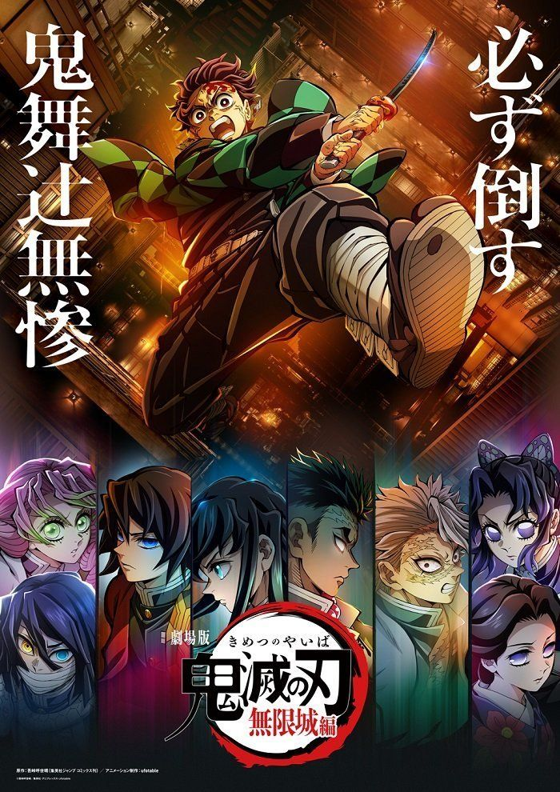
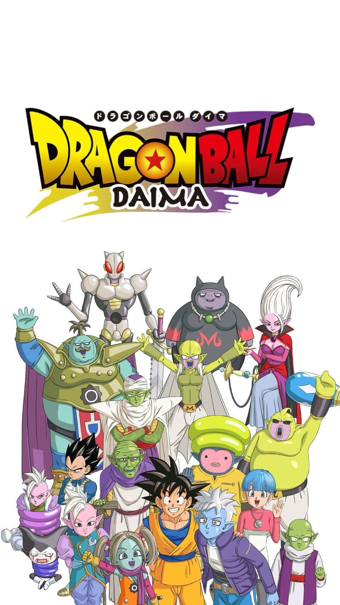

Demon Slayer Castelo-Infinito
O Castelo Infinito em Demon Slayer é uma fortaleza labiríntica controlada pelo vilão Muzan Kibutsuji,
que se manifesta como um espaço misterioso onde ele reuniu as Luas Superiores remanescentes e os
caçadores de demônios para a batalha final. O castelo, com sua arquitetura que muda e se adapta,
serve como um campo de batalha para os personagens, que se veem encurralados e forçados a lutar
contra demônios poderosos em meio a esse ambiente desconcertante.

Dragon ball Daima
Dragon Ball Daima é um novo anime onde Goku e outros Guerreiros Z são transformados em crianças por
um inimigo ligado ao mago Babidi, que os envia para um mundo desconhecido para uma aventura com
elementos de comédia e muita ação. O título "Daima" sugere um "grande mal" ou "maligno", e a série
explora a mitologia do universo de Dragon Ball, incluindo a origem dos Namekuseijins e dos
Kaioshins, a história por trás da fusão de Kibito e do Supremo Senhor Kaioh, e a reversão das
Esferas do Dragão.
Enredo

Novo episodio One-Piece
O "novo episódio" de One Piece se refere aos episódios do Arco Egghead, onde Luffy e os Chapéus de
Palha enfrentam o Almirante Kizaru e se aprofundam na misteriosa Ilha Egghead, focando na busca por
Dr. Vegapunk e os segredos do Século Vazio. A luta contra Kizaru é crucial para dar tempo a Vegapunk
para escapar e para que os Chapéus de Palha enfrentem os desafios de uma ilha tecnológica.